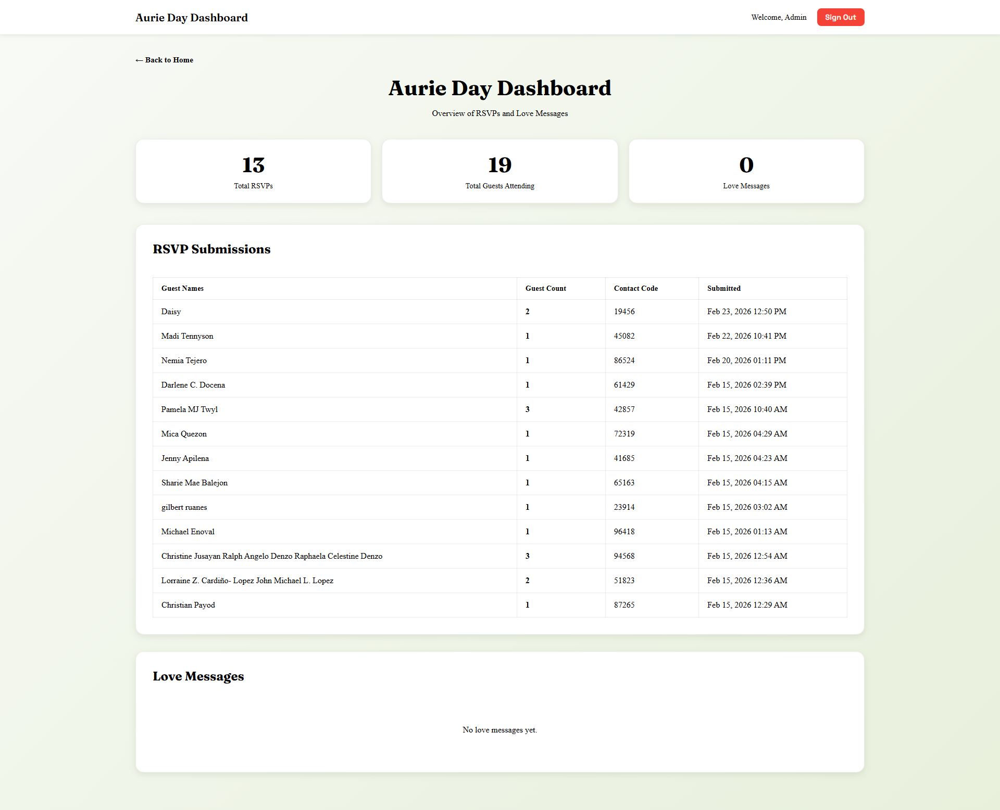

I Build Websites Around Your Business Needs, Not Templates
I am a programmer who focuses on business results, not just visual design. Every website I build is customized to your exact workflow, goals, and audience, so you get a product that fits your company from day one. From planning to launch, I create reliable, scalable, and easy-to-manage solutions that help you convert more customers, save time, and operate with confidence.
- Custom features aligned to your actual process.
- Clean, responsive UI that improves user trust.
- Maintainable code for long-term growth.
- Fast iteration based on your feedback.
Reliable Internal Support That Keeps Teams Productive
This ticketing platform gave the client complete control over support operations. Issues were reported, tracked, and resolved with transparency, reducing downtime and improving employee satisfaction.
- Shortened resolution cycles with organized ticket prioritization.
- Improved accountability via status tracking and monitoring views.
- Enhanced adoption by supporting both dark and light experiences.


Clear Cost Control That Protects Profit Margins
PRODCOST transformed pricing conversations into confident decisions. The client could compare vendors, understand cost drivers, and move faster on procurement while keeping margins healthy.
- Improved budget accuracy through real-time cost breakdowns.
- Accelerated purchasing workflows from request to approval.
- Enabled smarter sourcing with side-by-side vendor comparisons.
Event Execution Without Missed Confirmations
RSVP simplified guest management into an easy, conversion-focused flow. The client gained a cleaner invitation process, faster updates, and better attendance confidence for every event.
- Increased attendee response rate through a frictionless interface.
- Provided instant tracking for accepted and pending invites.
- Reduced manual follow-ups with a centralized dashboard.


Accurate Labeling That Prevents Production Errors
StickerLabel gives teams a clear, guided labeling workflow from setup to release. It helps clients reduce misprints, standardize product information, and ship faster with confidence.
- Reduced labeling mistakes through structured product data checks.
- Improved speed with a streamlined user configuration flow.
- Increased consistency across label output and product information.
Faster Production Decisions With Zero Guesswork
JOB ORDER gave the client a single source of truth for raw materials, batch output, and production timing. Instead of delayed manual updates, the team could act in real time and prevent bottlenecks before they happened.
- Reduced planning errors by validating order details before submission.
- Improved warehouse flow through checklist-guided processes.
- Increased visibility with line-up and monitoring dashboards.
Profile
Passionate programmer with experience in building scalable web applications and solving complex problems. Adept at working with modern technologies and continuously improving skills. Strong background in both frontend and backend development, as well as graphic design and system administration.
Programming & Computer Hardware Skills
- NATIVE PHP
- LARAVEL
- DATABASE ADMINISTRATOR
- MYSQL
- JQUERY
- WORDPRESS
- HTML & CSS
- Server Administrator
- Trouble Shooting
- Networking
- Computer Assembly
- LINUX OS
- WINDOWS OS
Experience
Freelace Fullstock Web Developer | Prima animal health inc.
- Design, develop, and maintain websites and web applications based on client requirements.
- Write clean, efficient, and well-documented code using HTML, CSS, JavaScript, and backend frameworks Optimize website performance, responsiveness, and user experience.
- Troubleshoot and debug issues to ensure smooth functionality.
- Collaborate with clients to understand project goals and provide technical recommendations.
- Provide post-launch support, maintenance, and updates for existing websites.
Triage Specialist | Genpact
- Workflow Optimization: Analyze and evaluate current business processes to identify areas for improvement. Develop and implement new workflows to enhance efficiency and effectiveness.
- Documentation: Create and maintain process documentation, including process maps, standard operating procedures (SOPs), and guidelines.
- Reporting: Collect, analyze, and report on process performance metrics. Use data to identify trends, measure performance, and make recommendations for improvements.
- Metrics Tracking: Monitor key performance indicators (KPIs) to ensure processes meet organizational standards and goals.
Freelace Fullstock Web Developer | Prima animal health inc.
- Design, develop, and maintain websites and web applications based on client requirements.
- Write clean, efficient, and well-documented code using HTML, CSS, JavaScript, and backend frameworks Optimize website performance, responsiveness, and user experience.
- Troubleshoot and debug issues to ensure smooth functionality.
- Collaborate with clients to understand project goals and provide technical recommendations.
- Provide post-launch support, maintenance, and updates for existing websites.
Fullstock Web Developer | Filstar Distributors inc.
- Code Writing: Develop, test, and maintain code for applications, websites, or software projects. Write clean, maintainable, and efficient code.
- Feature Implementation: Implement new features and functionalities as per the project requirements and specifications.
- Bug Fixing: Identify, debug, and fix bugs in existing code or systems.
- Assisted in managing the company’s WordPress website, including updating pages, posts, and product listings.
- Installed and configured plugins to support SEO and performance.
- Customized WordPress themes to align with company branding (colors, fonts, and layout adjustments).
- Maintained website content by regularly uploading images, documents, and blog posts.
- Supported the marketing team by ensuring the website was updated with current promotions and announcements.
- Performed routine maintenance such as plugin updates, backups, and troubleshooting minor site issues.
Local IT - technical 1 | Concentrix San Lazaro
- Provide support to end-users for hardware, software, and network issues.
- Troubleshoot and resolve technical problems via phone, email, or in-person.
- Maintain a knowledge base of common issues and solutions.
System Administrator / Junior Dev | Easycash Lending Company
- Ensure the stability, security, and performance of servers and systems. This involves monitoring system performance, applying updates, and troubleshooting issues.
- Write and maintain scripts or small applications to automate tasks, improve system operations, or enhance workflows.
- Extract meaningful data using MySQL Work Bench and Jaspersoft for generating company reports. This requires the advanced use of SQL for querying the needed data.
- Maintain and support the internal applications used by the company. This involves bug-fixing on both frontend and backend. I use JavaScript, HTML and CSS.
- Create designs for new and existing websites. This involves generating design for logos, web pages, and brochures. It also includes design for our Facebook posts. I use Photoshop.
- I occasionally do system administration by managing our servers using AWS EC2 and AWS S3.